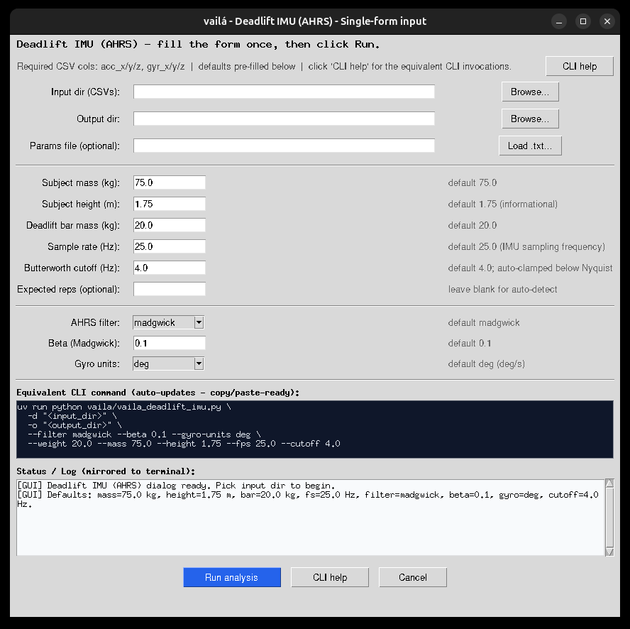

Category: Analysis
File: vaila/vaila_deadlift_imu.py
Version: 0.3.50
Updated: 2026-06-09
GUI Interface: Yes - Frame B - Deadlift IMU (B6_r7_c1), or via Deadlift (B5_r6_c5) → choose IMU (AHRS) in the data-source dialog
Dedicated IMU-only Deadlift / RDL analysis using AHRS sensor fusion. This is the companion to vaila_deadlift, specialised for barbell-mounted inertial sensors. Unlike the simple "project the raw accelerometer onto the static gravity axis" approach, this module tracks the sensor orientation as a quaternion and rotates the accelerometer into the Earth frame before integrating velocity / displacement. The result is robust to arbitrary barbell rotations during the pull.
Two industry-standard AHRS filters are ported directly from the x-io Technologies open-source C reference:
Reference C code lives under tests/Deadlift/madgwick_algorithm_c/MadgwickAHRS/ and
MahonyAHRS/ (C sources from the
xioTechnologies/Fusion repository).
A friendly walk-through is available on the
Medium Madgwick explanation.
roll = atan2(ay, az),
pitch = atan2(-ax, sqrt(ay² + az²)), yaw = 0.q = [w, x, y, z] (sensor frame relative to Earth frame).CSV with at minimum:
acc_x, acc_y, acc_z, gyr_x, gyr_y, gyr_zOptional magnetometer columns mag_x, mag_y, mag_z enable Madgwick's full AHRS branch
(with heading correction).
| Column | Units |
|---|---|
acc_x/y/z | m/s² (gravity included) |
gyr_x/y/z | deg/s by default; pass --gyro-units rad for rad/s |
mag_x/y/z (optional) | any consistent unit (normalised internally) |
GUI (single unified form): run uv run vaila.py, then click
Deadlift IMU in Frame B (or Deadlift → IMU (barbell
accelerometer + gyroscope CSV)). A single Tkinter window opens with all
inputs in one place: input directory, output directory, params-file picker (loads numeric fields
automatically), subject mass, subject height, deadlift bar mass, sample rate, Butterworth cutoff,
Madgwick beta, gyro units and optional expected reps. The GUI does not ask the user
to choose a filter: it runs Madgwick and Mahony and writes both sets of results.
The current dialog also exposes:
deadlift_parameters.txt, validating numeric fields and starting the run all leave
a clear [GUI] ... trail both inside the dialog and in the shell that launched
vaila.py;

GUI browser / HiDPI fixes:
columnconfigure weight=1), so the full
C:\Users\<name>\Documents\<...>\imu_data-style path fits visually;xview_moveto(1.0)), so the meaningful trailing portion of long paths is
always visible instead of a truncated drive prefix;Toplevel when launched from vaila.py,
avoiding a nested Tk mainloop; after Run analysis the control
returns immediately to the batch processor and terminal progress continues;mass=75 kg, height=1.75 m,
bar=20 kg, fs=25 Hz, cutoff=4 Hz,
beta=0.1, gyro=deg) is re-asserted
with a 50 ms root.after callback, which works around an occasional Tk 8.6 +
Windows HiDPI race where Entry widgets render blank until first focus.Launching the module always prints a short banner with the defaults and the canonical CLI invocations to the terminal — useful when the user wants to reproduce or script the same run later.
CLI:
# Open the unified Tkinter dialog (no args)
uv run python vaila/vaila_deadlift_imu.py
# Single CSV file: runs Madgwick + Mahony by default
uv run python vaila/vaila_deadlift_imu.py -i tests/Deadlift/imu/deadlift_imu.csv
# Batch mode: process every *.csv in a directory (mirrors the GUI, both filters)
uv run python vaila/vaila_deadlift_imu.py -d tests/Deadlift/imu -o /tmp/dlift_out
# Explicit params file (-p / --params-file), same syntax shown by --help
uv run python vaila/vaila_deadlift_imu.py \
-i tests/Deadlift/imu/deadlift_imu.csv \
-p tests/Deadlift/imu/deadlift_parameters.txt
# Batch with explicit params file
uv run python vaila/vaila_deadlift_imu.py \
-d tests/Deadlift/imu \
-p tests/Deadlift/imu/deadlift_parameters.txt \
-o /tmp/dlift_out
# Inline overrides (win over params file)
uv run python vaila/vaila_deadlift_imu.py -i data.csv --mass 80 --height 1.80 --weight 60
uv run python vaila/vaila_deadlift_imu.py -i data.csv --filter mahony --beta 0.05 # restrict to one filter
uv run python vaila/vaila_deadlift_imu.py -i data.csv --fps 100 --cutoff 4 --gyro-units rad
uv run python vaila/vaila_deadlift_imu.py -i data.csv --reps 14 # pin a known rep count
# Force the unified GUI dialog
uv run python vaila/vaila_deadlift_imu.py --gui
# Full CLI help (lists every flag with its default + description)
uv run python vaila/vaila_deadlift_imu.py --helpNew flag -d / --input-dir processes every *.csv in a directory
exactly the way the GUI does (single timestamped vaila_deadlift_imu_ahrs_*
sub-directory, per-file progress lines, identical reports). Both -d and the GUI
print an "Equivalent CLI command" block before processing, so any one-off
interactive run can be replayed verbatim in a script.
Precedence (highest first): CLI / GUI override → params file → TOML → defaults.
deadlift_parameters.txt beside the input CSV (auto-loaded; can also be pointed to
explicitly with -p/--params-file):
subject_mass_kg,subject_height_m,deadlift_mass_kg,fs_hz
75.0,1.75,20.0,25.0Tolerated column aliases (case-insensitive):
subject_mass/body_mass_kg/mass_kg/mass,
subject_height/height_m/height,
deadlift_mass/barbell_kg/weight_kg/weight,
and fs/fps/imu_fps/sample_rate.
key,value format (still supported)weight,20
real_repetition_count,10vaila_deadlift_config.toml beside the input CSV or in vaila/:
[deadlift_context]
imu_fps = 25.0
weight_kg = 20.0
mass_kg = 75.0
use_total_mass_for_power = trueRepetitions are counted from the raw accelerometer component with the largest peak-to-peak range, not separately from each AHRS filter. The selected axis is low-passed at 2 Hz, the peak direction follows the component's mean gravity sign, and close subpeaks are merged so a small jerk inside the same repetition does not become an extra rep. The resulting brackets are then reused by both Madgwick and Mahony, while AHRS vertical acceleration still supplies velocity, displacement and kinetics.
Leading/trailing static windows are limited so the barbell-at-rest periods at the start/end of
a set are not counted or used to discard a valid edge rep. The shared
deadlift_parameters.txt rep count is not used to trim detection by default
(it often describes a different capture); use --reps N to pin a known count. On the
bundled tests/Deadlift/imu/deadlift_imu.csv example with fs_hz=21.0,
the raw acc_x negative peaks lock the set to 14 repetitions for both filters.
Each input CSV produces a sibling folder named
vaila_deadlift_imu_ahrs_YYYYMMDD_HHMMSS/<input_basename>/ containing a
*_imu_ahrs_filter_index.html chooser plus separate madgwick/ and
mahony/ subfolders. Each filter subfolder contains:
*_imu_ahrs_processed_*.csv — per-sample time series (quaternion, Euler angles,
quaternion axis-angle spherical columns, Earth-frame acc, linear acc, vertical velocity,
displacement, translation_world_x/y/z_m used by the animation, plus
rep_detection_axis and rep_detection_direction)*_imu_ahrs_rep_metrics_*.csv — per-rep summary (peak / mean velocity, power,
work, ROM, peak / mean force, impulse)*_imu_raw_acc_axes_*.png — raw acc_x / acc_y /
acc_z (gravity included); the dominant rep-detection axis is highlighted and the
locked repetition peaks are marked*_imu_ahrs_orientation_*.png — roll / pitch / yaw, Earth acc components,
vertical linear acceleration*_imu_quaternion_spherical_*.png — unit quaternion line graph with
|q|, rigid-body rotation_deg, axis latitude_deg, and axis
longitude_deg (unwrapped for continuous plotting)*_imu_quaternion_rigidbody_animation_*.html — standalone 3D canvas animation
with fixed real-world Cartesian axes, cube translation from AHRS/ZUPT vertical displacement,
cube/body orientation from q(t), unit axis n(q), latitude, longitude,
and rotation angle in degrees*_imu_vel_disp_*.png — vertical velocity and displacement*_imu_rep_bars_*.png — per-rep bar charts*_imu_velocity_overlay_*.png — velocity profile overlay*_imu_ahrs_report.html — self-contained HTML report (with the didactic
quaternion section and BibTeX-ready references)*_imu_ahrs_report.md — Markdown sibling of the HTML report (same tables,
same figures, same references)A unit quaternion
q = [w, x, y, z] = [cos(theta/2), nxsin(theta/2),
nysin(theta/2), nzsin(theta/2)]
represents a rigid-body rotation by theta around the unit axis
n. Because |q| = 1, the axis is represented on the unit sphere as
latitude and longitude:
quat_rotation_deg: rotation angle in degrees.quat_axis_latitude_deg: asin(nz) in degrees.quat_axis_longitude_deg: atan2(ny, nx) in degrees.The report includes a line graph for those spherical coordinates and a standalone HTML animation.
In the animation the real-world axes stay fixed (Xe, Ye, Ze), the cube center translates by the
AHRS/ZUPT vertical displacement, and the sensor cube/body axes (Xb, Yb, Zb) are rotated by
q(t). The black vector is the unit quaternion axis n(q).
The quaternion-based 3D kinematic modeling used by this module traces back to a close academic collaboration with Professor René Jean Brenzikofer (UNICAMP), which led to the first publication of quaternion-based three-dimensional modeling data in the book "Modelos Matemáticos nas Ciências Não-Exatas, vol. 1" (Editora Blucher, 2007). Quaternions solve the gimbal lock singularity and are the exact basis for the AHRS data-fusion algorithms in IMUs used in wearables and player GPS+IMU trackers. This module is dedicated to his memory.
Primary references (BibTeX-ready):
Tribute & social-media coverage:
@book{nogueira2007modelos,
title = {Modelos matem\'aticos nas ci\^encias n\~ao-exatas - vol. 1},
author = {Nogueira, Eduardo Arantes and Martins, Luiz Eduardo Barreto
and Brenzikofer, Ren\'e},
year = {2007},
publisher = {Editora Blucher},
isbn = {9788521204190},
url = {https://www.blucher.com.br/modelos-matematicos-nas-ciencias-nao-exatas-vol-1_9788521204190}
}
@phdthesis{santiago2009rotaccoes,
title = {Rota\c{c}\~oes tridimensionais em biomec\^anica via quat\'ernions:
aplica\c{c}\~oes na an\'alise dos movimentos esportivos},
author = {Santiago, Paulo Roberto Pereira},
school = {Universidade Estadual Paulista (Unesp),
Instituto de Bioci\^encias de Rio Claro},
year = {2009},
url = {http://hdl.handle.net/11449/100404}
}